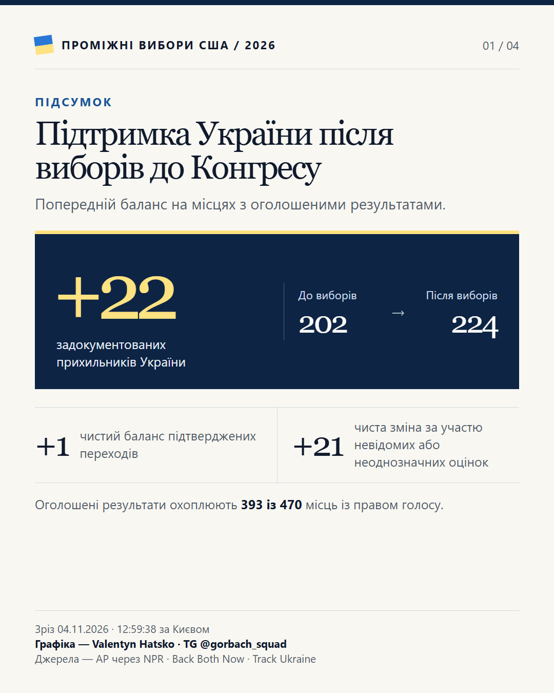
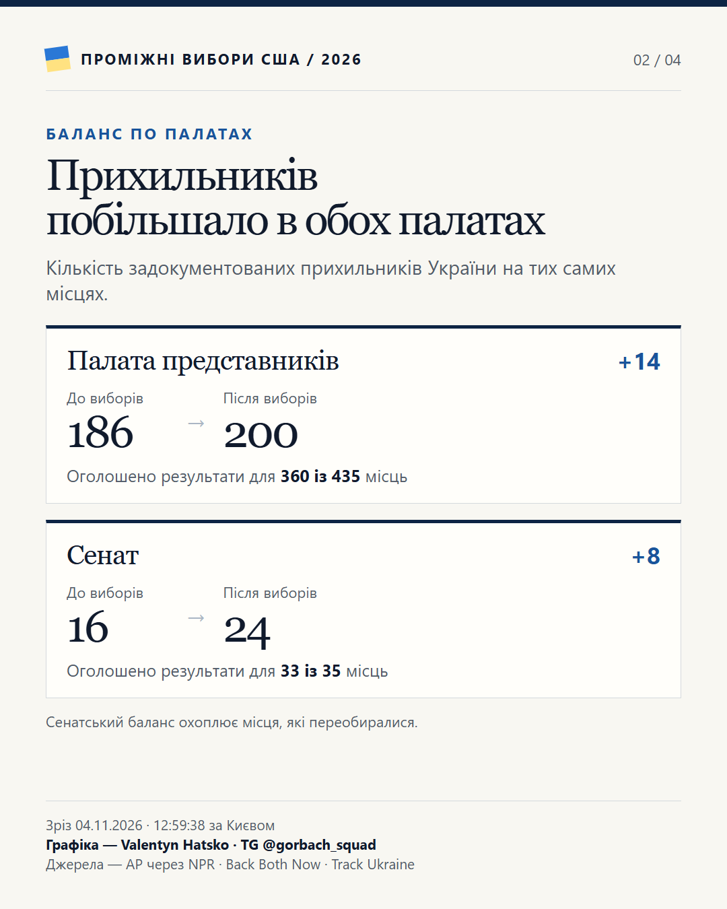
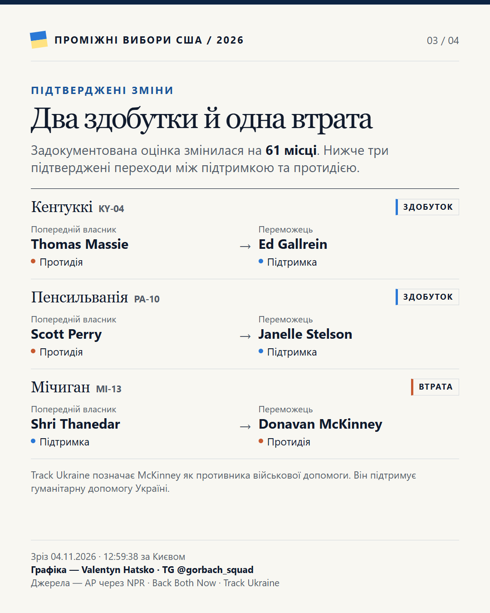
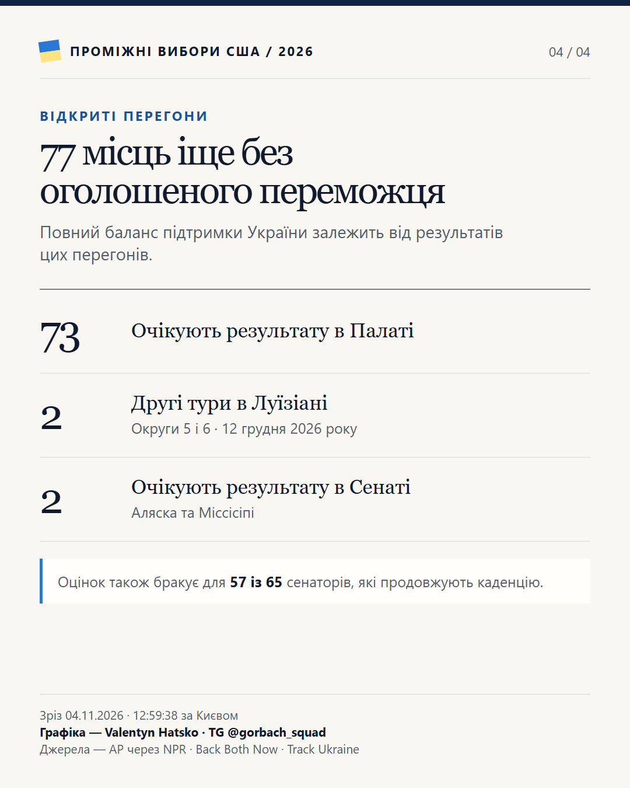

Проміжні вибори США 2026
Підтримка України в Конгресі
На 393 із 470 місць з оголошеним результатом кількість задокументованих прихильників України зросла з 202 до 224.
Зріз зафіксовано .
Візуальний підсумок








Методика
Порівняно оцінки попередників та оголошених переможців на тих самих місцях. Підтверджені переходи між підтримкою та протидією дали +1 до балансу. Ще +21 припадає на переходи за участю невідомих або неоднозначних оцінок.